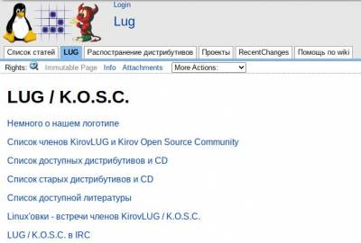

В данном разделе собрана информация о встречах Кировского LUG'а в период палеолита. Информация очень скудная и собрана в основном на раскопках страницы старого KirovLUG'a с WebArchive
13 июля 2004 г.
Дополнительных свидетельств не сохранилось
С 27-го июля по 1-е августа 2004 г. (LinuxFest и LinuxConf)
Дополнительных свидетельств не сохранилось
С 16-го июля по 18-е июля 2004 г. (KirovLUG на Гринландии)
Дополнительных свидетельств не сохранилось
21 августа 2004 г.
Дополнительных свидетельств не сохранилось
27 августа 2004 г.
Дополнительных свидетельств не сохранилось
1 октября 2004 г.
Дополнительных свидетельств не сохранилось
15 октября 2004 г.
Дополнительных свидетельств не сохранилось
16 октября 2004 г. (создание сайта)
показать доп свидетельства
Был создан сайт сообщества под доменом kirov.lug.ru

Захар Акулов ознаменовал это событие следующей статьёй в разделе сайта “Новости”
Наконец-то! Свершилось!
Теперь и у нас, кировских линуксоводов и линуксоидов, непингуемых ламеров и махровых гуру есть свой сайт.
Мы разные. Различаемся ростом и весом, возрастом и характером, полом и размером обуви, но объединяет нас любовь к компьютерам и нелюбовь к неразрешенным вопросам.
Здесь, на этом ресурсе, мы постараемся собрать ответы, на наш взгляд, на наиболее насущные вопросы. Конечно, в основном они касаются Linux. Ведь мы работаем с операционными системами, а не, с позволения сказать, продуктами. :^)
Почему Linux?
Ответов, как и дистрибутивов Linux, много. Кому-то нравится линух за то, что сложно найти компьютер, на который его нельзя установить - он работает везде, от мобильных телефонов до новейших процессоров, скажем, AMD64, к которым MS обещает выпустить полностью совместимую версию своего продукта только к середине 2005 года. Кому-то нравится его настраиваемость - вы вольны делать со своей системой все, что вам заблагорассудится, и, разумеется, настраивать ее так, как душе угодно. Кому-то нравится быть всегда на самой вершине прогресса . вы можете обновлять свою систему хоть каждый день и практически все современные устройства могут работать со стандартным дистрибутивом Linux, даже те, о которых сам пользователь имеет самое смутное представление. Отказоустойчивость, быстродействие, расширяемость - все это Linux, ОПЕРАЦИОННАЯ СИСТЕМА, такая, как она должна быть.
И, разумеется, БЕСПЛАТНОСТЬ. Не халява, как пиратские диски с MS-продуктами, а именно бесплатность. Свобода. Свобода выбора. Свобода действий. Свобода прогресса. Вы - хозяин своей системы. Вы можете все. Вы - царь и бог!
И никто не потребует от вас денег за кривой апгрейд, никакая прога не усомнится в ваших умственных способностях, вы можете быть уверены в том, что ваша работа не пропадет только потому, что программы разных версий не имеют ни малейшего понятия о формате файла друг друга.
Мы не ставим своей целью поголовно переманить всех на Linux пустыми обещаниями и красивыми картинками, отнюдь. Мы здесь для того, чтобы все, у кого возникнут вопросы по Linux, получили четкий, своевременный, исчерпывающий ответ. Совершенно бесплатно. Мы здесь для того, чтобы все, кто хочет попробовать Linux, мог сделать это с минимальным риском. Совершенно бесплатно. Мы здесь для того, чтобы все, кто хочет получить свежий дистрибутив, получил его. Совершенно бесплатно. Мы здесь именно для этого. Мы . Кировская группа поддержки пользователей Linux, KirovLUG. Это наша работа, это наше хобби, это то, что нам нравится.
Вы - свободный человек, вам решать. Выбор за Вами.
Мы выбираем свободу.
31 октября 2004 г.
Дополнительных свидетельств не сохранилось
27 ноября 2004 г. (днюха члена KirovLUG)
показать доп свидетельства
Был отпразднован день рождения Александра Колотова (mr. Эбола)
11 февраля 2005 г.
Дополнительных свидетельств не сохранилось
25 февраля 2005 г.
Дополнительных свидетельств не сохранилось
4 марта 2005 г.
Дополнительных свидетельств не сохранилось
11 марта 2005 г. (днюха члена KirovLUG)
показать доп свидетельства
Был отпразднован день рождения Юры Турченкова (solarw)
На сайте kirov.lug.ru была опубликована новость:
"Добавлены фотографии с линуксовок, проходивших в этом году. К сожалению, возможность ведения фоторепортажей возобнавилась недавно, поэтому фотографий не так много."
--by Колотов Александр (mr. Эбола)--
18 марта 2005 г.
Дополнительных свидетельств не сохранилось
25 марта 2005 г.
показать доп свидетельства
Встреча состоялась перед днём рождения Стаса Круподёрова (pashelper/iNode)
1 апреля 2005 г.
Дополнительных свидетельств не сохранилось
24 февраля 2006 г.
Дополнительных свидетельств не сохранилось
24 марта 2006 г.
Дополнительных свидетельств не сохранилось
19 мая 2006 г.
Дополнительных свидетельств не сохранилось
11 августа 2006 г.
Дополнительных свидетельств не сохранилось
16 сентября 2006 г. (праздничный семинар)
показать доп свидетельства
Состоялся семинар, приуроченный к Free and Open Source Software Day
На сайте kirov.lug.ru опубликована новость
Нашими усилиями был проведен семинар “OpenSource: реалии и перспективы”. Подробнее можно ознакомится на вики. В будующем планируется это сделать более регулярным, так что следите за новостями.
"Всех присутствовавших на нашем семинаре 16 сентября и всех кто хотел бы присутствовать на последующих, просим заполнить опросник, размещённый на нашем сайте. Это поможет нам предоставить Вам более интересную и полезную для Вас информацию, а также сообщит нам о том что мы готовим всё это не зря."
"--by KOSC--
9 февраля 2007 г.
Дополнительных свидетельств не сохранилось
13 марта 2007 г.
показать доп свидетельства
Участники посетили выставку МКС 2007
30 марта 2007 г.
Дополнительных свидетельств не сохранилось
8 июня 2007 г.
Дополнительных свидетельств не сохранилось
3 апреля 2009 г. (Linux Install Fest)
показать доп свидетельства
В ТЦ Фестиваль состоялся Linux Install Fest, приуроченный к выходу OpenMoko 2009.x.